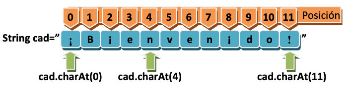
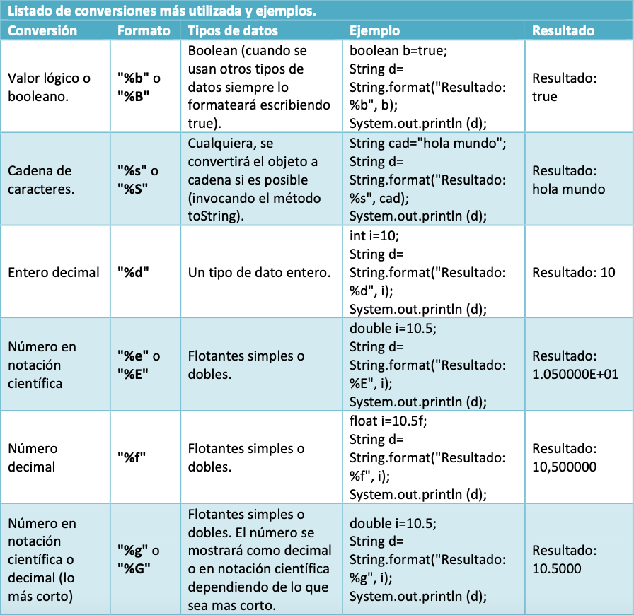
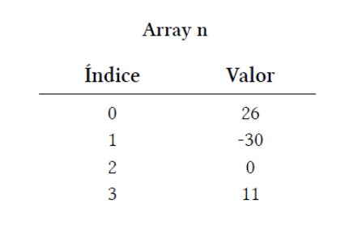
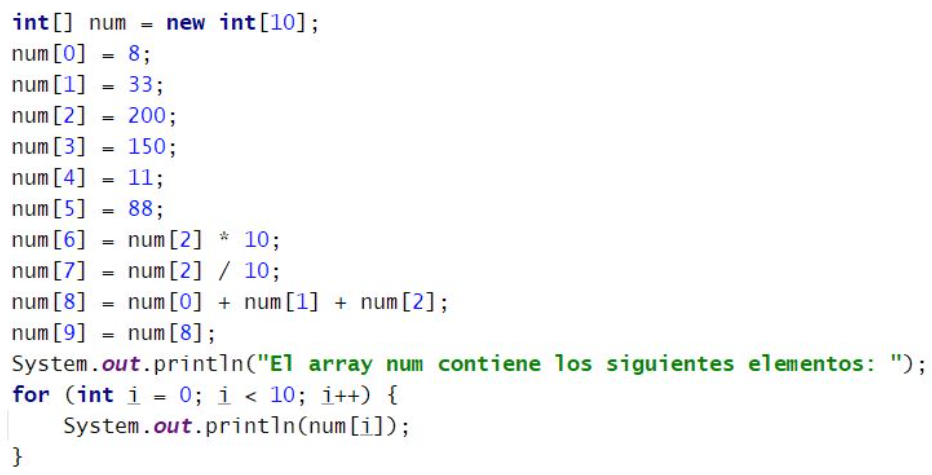
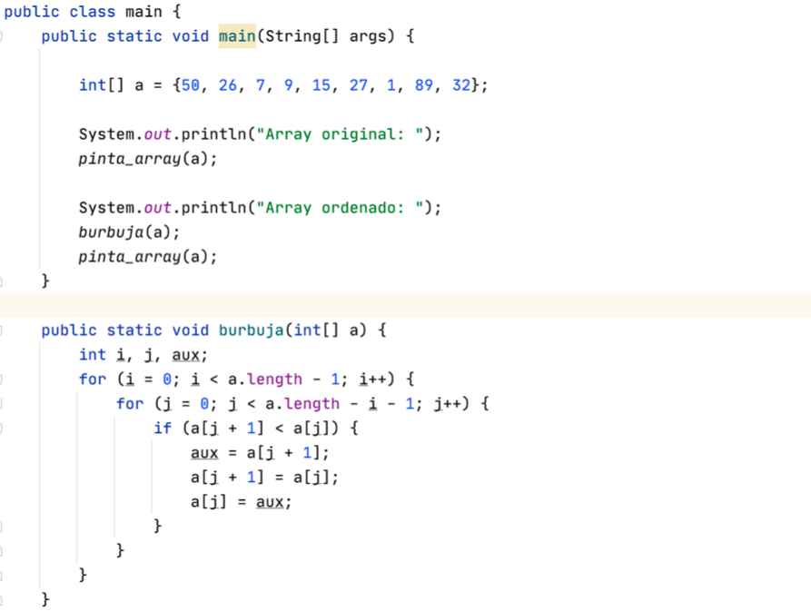
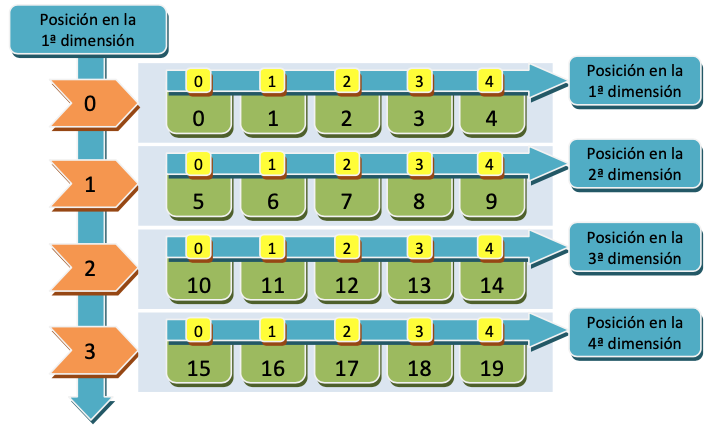
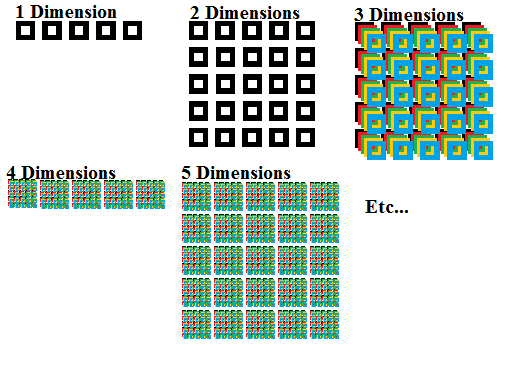

Programación
Tema 4: Arrays estáticos y cadenas
Índice
- Introducción
- Cadenas de caracteres
- Arrays estáticos
Introducción
Con lo visto hasta ahora podemos hacer programas complejos, pero limitados por el número de datos: Número finito de usuarios, cuentas, proyectos...
Solución: Estructuras de datos para almacenar datos simples y compuestos, con un número fijo o dinámico de elementos que se puedan recorrer y sobre los que realizar las operaciones CRUD.
Introducción
Clasificación de las estructuras de almacenamiento
Si pueden almacenar...
- Datos del mismo tipo: arrays (vectores), arrays multidimensionales (matrices), listas, colecciones, conjuntos...
- Datos de distinto tipo: clases (se verán en POO).
Introducción
Clasificación de las estructuras de almacenamiento
Según su tamaño...
- Fijo: Su tamaño se especifica al crear la estructura y no cambia. Ejemplo: arrays o matrices.
- Dinámico: Su tamaño cambia en tiempo de ejecución según las necesidades. Ejemplo: listas, hash, colecciones...
Índice
- Introducción
- Cadenas de caracteres
- Arrays estáticos
Cadenas de caracteres
Son un tipo de estructura de datos que instanciamos mediante la clase String.
Formas equivalentes de declarar e inicializar una cadena:
// Como tipo primitivo
String cad1 = "Hola";
// Instanciando objeto de la clase String
String cad2 = new String("Hola");
Cadenas de caracteres
Para ampliar: Codificación de los caracteres
Formato de datos JSON para intercambio de datos.
Ejemplo de API noticias en JSON.
Cadenas de caracteres
Operaciones
Concatenar: Une 2 cadenas. Se realiza con el operador + o el método String concat(String cad) de la clase String. Se puede concatenar cualquier variable a un String gracias al método .toString() definido en todas las clases.
String cad = "¡Bien".concat("venido!");
int edad = 38;
System.out.println(cad + " En tu " + edad + " aniversario");
Cadenas de caracteres
Operaciones
Longitud: El método int length() devuelve el número de caracteres de la cadena.

Cadenas de caracteres
Operaciones
Obtener caracter: El método char charAt(int pos) devuelve el carácter de la posición pasada por parámetro.

Cadenas de caracteres
Operaciones
Subcadena: El método String substring(int posInicio, int posFin) devuelve la subcadena entre las posInicio y posFin (opcional).

Cadenas de caracteres
Operaciones
Convertir a número: El método .valueOf(String cad) disponible en todas las clases descendientes de Number (Short, Integer, Long, Float, Double) convierte la cadena pasada por parámetro al número correspondiente.
Cadenas de caracteres
Operaciones
Convertir a número. Similar a los métodos parseInt(), parseFloat()..., sólo que estos devuelven tipos de datos primitivos (int, float...) y valueOf devuelve objetos de clases Integer, Float...
Ejemplo:
// Equivalentes
float num1 = Float.parseFloat(numCadena);
float num2 = Float.valueOf(numCadena);
// También así: Float num2 = Float.valueOf(num2);
// Firmas de ambas funciones:
// public static float parseFloat(String s) throws NumberFormatException
// public static Float valueOf(String s) throws NumberFormatException
Cadenas de caracteres
Operaciones
Convertir a número. Se suele incluir en un bloque try-catch porque puede lanzar la excepción NumberFormatException.
Ejemplo:
String numCadena = "1234.5678";
try {
float num1 = Float.valueOf(numCadena);
double num2 = Double.valueOf(numCadena);
// Equivalentes:
float num1f = Float.parseFloat(numCadena);
double num2d = Double.parseDouble(numCadena);
}catch(NumberFormatException e){
// Código a ejecutar si no se puede convertir
}
Cadenas de caracteres
Operaciones
Ejercicio: Realiza un programa que pida en una única cadena el nombre y apellidos del usuario y los muestre separados. Suponemos que tanto el nombre como cada apellido están formados por 1 palabra. Ejemplo: Armando Bronca Segura
Cadenas de caracteres
Operaciones
Solución
Scanner s = new Scanner(System.in);
String palabra1 = "No hay palabra";
String palabra2 = "No hay palabra";
String palabra3 = "No hay palabra";
boolean terminado = false; // Para detectar cuando no hay más espacios y terminar
int contador = 0; // Para controlar cuántas palabras hay
int posEspacio;
System.out.print("Hola, introduce tu nombre completo, separado por espacios: ");
String nombreCompleto = s.nextLine();
palabra1 = nombreCompleto; // Por si no hay ningún espacio
while(!terminado) { // Mientras que siga encontrando espacios
for (int i=0; i < nombreCompleto.length(); i++) {
if (Character.isWhitespace(nombreCompleto.charAt(i))) {
posEspacio = i;
if (contador == 0) { // Primera palabra
palabra1 = nombreCompleto.substring(0, posEspacio); // Saco la primera palabra
nombreCompleto = nombreCompleto.substring(posEspacio + 1); // La quito del nombre completo
palabra2 = nombreCompleto; // Por si no hay más espacios
}
if (contador == 1) { // Segunda palabra
palabra2 = nombreCompleto.substring(0, posEspacio); // La saco
palabra3 = nombreCompleto.substring(posEspacio + 1); // Saco la tercera
terminado = true; // He terminado
}
contador++;
break; // No sigo el bucle for
}
if(i+1 == nombreCompleto.length()) terminado = true; // Si termino de recorrer la palabra, es que no hay más espacios
}
}
System.out.println("Palabra1 = " + palabra1);
System.out.println("Palabra2 = " + palabra2);
System.out.println("Palabra3 = " + palabra3);
Cadenas de caracteres
Operaciones
Formatear salida: Se puede utilizar el método printf() de System.out en lugar de print() / println().
float velocidad = 20.785f;
System.out.println("Velocidad: " + velocidad + " m/s");
// Velocidad: 20.785 m/s
System.out.printf("Velocidad: %.2f m/s", velocidad);
// Velocidad: 20,78 m/s
Cadenas de caracteres
Operaciones
Formatear cadena: Mediante el método format() de String igual que se hace con printf().
String salida = String.format("Velocidad: %.2f m/s", velocidad);
System.out.println(salida);
// Velocidad: 20,78 m/s
Cadenas de caracteres
Operaciones
Formatear cadena: Listado de conversiones.

Cadenas de caracteres
Operaciones
Formatear cadena: Se pueden aplicar modificadores a las conversiones para ajustar la salida, situándolos entre el carácter de escape % y la letra que indica el tipo de conversión d, f, g...
%[Ancho][.Precisión]Conversión
Cadenas de caracteres
Operaciones
Formatear cadena: Ejemplo
String descripcion = "Lavadora";
int unidades = 10;
float precioUnidad = 302.4f;
float total = unidades * precioUnidad;
// Cada valor numérico se muestra con un ancho total de 8 espacios
String mensaje = String.format("Producto: %s; Unidades: %8d; Precio por unidad: %8.2f €; Total: %8.2f €", descripcion, unidades, precioUnidad, total);
System.out.println(mensaje); // Producto: Lavadora; Unidades: 10; Precio por unidad: 302,40 €; Total: 3024,00 €
Cadenas de caracteres
Operaciones
Formatear cadena: Es posible nombrar los argumentos usando su posición seguida del $ (empiezan en 1):
int i = 10;
int j = 20;
String d=String.format("%1$d multiplicado por %2$d (%1$dx%2$d) es %3$d",i,j,i*j);
System.out.println(d); // 10 multiplicado por 20 (10x20) es 200
Cadenas de caracteres
Operaciones avanzadas

Cadenas de caracteres
Leer fichero y guardarlo en String
public static String leeFichero(String archivo) throws IOException {
String texto = "", cadena = "";
FileReader f = new FileReader(archivo);
BufferedReader b = new BufferedReader(f);
cadena = b.readLine();
while(cadena!=null){
//System.out.println(cadena);
texto = texto + cadena + "\n";
cadena = b.readLine();
}
b.close();
return texto;
}
public static void main(String[] args) {
String contenido="";
try {
// NOTA: Ubicar "prueba.txt" en la RAÍZ DEL PROYECTO
contenido = leeFichero("prueba.txt");
} catch (IOException e) {
System.out.println("No he podido encontrar el fichero");
}
System.out.println(contenido);
}
Cadenas de caracteres
Ejercicios de la relación de cadenas
Cadenas de caracteres
Expresiones regulares
Índice
- Introducción
- Cadenas de caracteres
- Arrays estáticos
Arrays estáticos
Un array es una estructura que almacena datos del mismo tipo. Al crearlo se especifica su tamaño, el cual no podrá cambiar después.
tipo[] nombre; // Declaración
nombre = new tipo[tamaño]; // Creación

Arrays estáticos
Ejemplos de declaración y creación de arrays:
int[] edades = new int[20];
String[] nombres = new String[20];
float[] notas = new float[20];
boolean[] aprobados = new boolean[20];
Arrays estáticos
Ejemplo de declaración y uso de array de enteros de 4 elementos:
Arrays estáticos
Arrays de una dimensión
Los datos del array están relacionados con su posición. Acceso a los datos: nombre[pos]

Arrays estáticos
Arrays de una dimensión
Inicialización del array con valores a la vez que se crea:
int[] x = {8, 33, 200, 150, 11};
Su propiedad .length devuelve el tamaño:
System.out.println("Longitud del array: " + x.length);
Arrays estáticos
Arrays de una dimensión
Uso del índice en arrays:

Arrays estáticos
Arrays de una dimensión
Recorrer un array:

Arrays estáticos
Arrays de una dimensión
Ejemplo notas medias:
Arrays estáticos
Arrays de una dimensión
Ejercicios de la relación de arrays estáticos de 1 dimensión
Arrays estáticos
Arrays de una dimensión
Ordenar arrays: Método de la burbuja, shell, selección, inserción, merge, quicksort...
Método de la burbuja
Arrays estáticos
Arrays de una dimensión
Método de la burbuja: Explicación conceptual
Arrays estáticos
Arrays de una dimensión
Método de la burbuja

Arrays estáticos
Arrays de una dimensión
Método de la burbuja

Arrays estáticos
Arrays de una dimensión
Método de la burbuja
Arrays estáticos
Arrays de una dimensión
Ejercicios
- Modifica la función burbuja anterior para que ordene de manera descendente.
- Crea una función que ordene el array usando otro método (más info).
Arrays estáticos
Arrays de una dimensión
Ejercicio Bingo
Arrays estáticos
Arrays bidimensionales
Estructura que almacena arrays dentro del array. Utiliza 2 índices para localizar los datos: nombre[pos1][pos2].
Ejemplos de uso: Almacenamiento del valor de los píxeles de una imagen, juegos de tablero, Bingo...
Declaración y creación:
tipo[][] nombre = new tipo[tamaño][tamaño];
Arrays estáticos
Arrays bidimensionales
Recorrido

Arrays estáticos
Arrays bidimensionales
Ejemplo
Arrays estáticos
Arrays bidimensionales
- En el ejemplo anterior el array es de 3 filas por 2 columnas.
- Un array bidimensional se recorre igual que el de una dimensión, sólo que con 2 bucles, uno para filas y otro interior para columnas.
- También se puede inicializar en el momento de creación:
int[][] n = {{20, 4},{67, 33},{0, 7}};
Arrays estáticos
Arrays bidimensionales
Creación de un array con 2ª dimensión irregular:

Arrays estáticos
Arrays bidimensionales
Recorrido con foreach
- Al recorrer arrays con for es fácil cometer errores con el iterador, accediendo por ejemplo a una posición que no existe.
- Solución y simplificación con el bucle foreach:
for (tipo elemento : array){
// Hacer algo con elemento
}
Arrays estáticos
Arrays bidimensionales
Recorrido con foreach
Arrays estáticos
Arrays multidimensionales
Arrays estáticos
Arrays multidimensionales

Arrays estáticos
Arrays multidimensionales
Ejercicios de la relación de arrays estáticos de 2 dimensiones

Índice
- Introducción
- Cadenas de caracteres
- Arrays estáticos
- BONUS: Argumentos de programa
Argumentos del programa
En la función main se le pasa un array String[] args con los argumentos que recibe nuestro programa desde fuera.
public class EjemploPasoArgumentos {
public static void main(String[] args) {
for(int i=0; i < args.length; i++) System.out.println(args[i]);
}
}
Argumentos del programa
Para probarlo desde consola, hay que compilarlo y luego ejecutarlo con los argumentos que queramos:
- javac EjemploPasoArgumentos.java
- java EjemploPasoArgumentos uno dos tres
Argumentos del programa
También podemos probarlos directamente desde IntelliJ en Run > Edit configurations...

Argumentos del programa
Ejercicio
Crea un programa que cualquier profesor sin conocimientos de informática pueda utilizar con sus alumnos para sacarlos a la pizarra de forma "voluntaria".
El programa recibirá el nombre de todos los alumnos y devuelverá al agraciado de forma aleatoria.
Repasar
Tips de la presentación
¿Imprimir en PDF?
- Clic aquí
- CTRL/CMD + P
- Guardar como PDF
Navegar por las diapositivas
- Pulsa ESC
- Clic a la que quieras ir